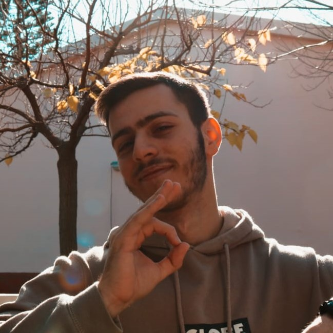
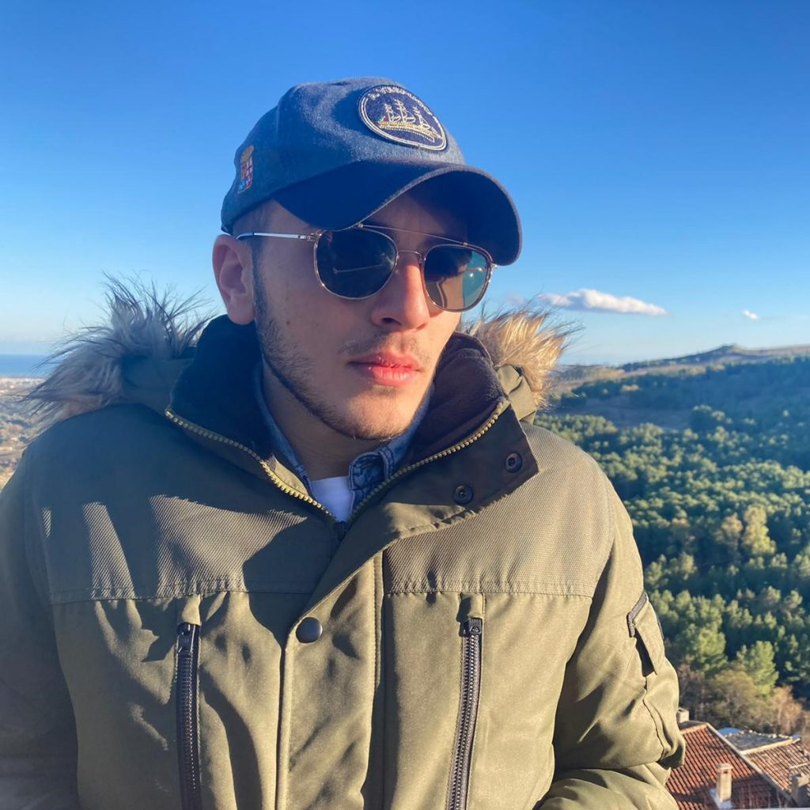

Chi si nasconde dietro il monitor?
$request = "Show me your names!";
if($request != ""){
scroll_down();
}
elseif(needCode() == true){
callUs();
}

"Ciao, mi chiamo Antonio Vitale, ma se siete perspicaci questo lo avete già letto sopra!
Mi piace premere tasti sulla tastiera e fare apparire cose sul monitor, amante del codice sorgente e killer seriale di bug, l'informatica è la mia passione.
Frequento il quinto anno dell'ITSET Manlio Capitolo di Tursi, questo progetto è stato frutto di tante nozioni e skills che si sono intrecciate per realizzare tutto ciò.
Realizzare un'idea che si ha in mente e che gli altri del gruppo condividono ma in maniera differente non è assolutamente facile, eppure ci siamo riusciti!"

"Ciao, mi chiamo Andrea Kaci ho diciotto anni vivo in un piccolo paesino della Basilicata.
Sono un appassionato dell'informatica e amante delle tecnologie in generale.
Frequento il quinto anno presso l'ITSET Manlio Capitolo di Tursi.
In questi giorni insieme ai miei compagni ci siamo trovati ad affrontare e sviluppare questo progetto molto interessante.
Personalmente penso che sia una bella esperienza, grazie a questa iniziativa sono riuscito ad arricchire le mie conoscenze in questo settore ma sopratutto toccare 'con mano' la realtà che l'informatica nasconde."Instagram GitHub

"Ciao, sono Willyams Sanchirico, frequento l'ultimo anno dell'indirizzo informatico preso L''ITSET Manlio Capitolo di Tursi.
Appassionato di informatica e nuove tecnologie, ci siamo imbattuti con i miei compagni di classe in questo progetto che, per quanto mi riguarda mi ha colpito molto sul punto dal punto di vista delle tematiche trattate, volte alla conoscenza di nuove informazioni che prima erano da me poco approfondite.
Spero di affrontare altri progetti del genere poiché sono molto interessanti."

Ciao, sono Alessandro Bevilacqua e frequento l’indirizzo informatico dell’ITSET “Manlio Capitolo” di Tursi anche se, essendo oramai in classe quinta, sono praticamente agli sgoccioli di questo viaggio.
Ciononostante Il progetto relativo agli Open Data ha sicuramente da subito attratto la mia curiosità per varie ragioni: capire l’utilità che essi possono avere nel mondo informatico, acquisire nuove competenze e per ultimo ma non per importanza lavorare in team.
Personalmente mi fa molto piacere che anche la pubblica amministrazione del nostro Paese stia pian piano puntando sull’universo digitale che presenta numerosissimi vantaggi per velocità di accesso, immagazzinamento dei dati e trasparenza. Navigando sul sito ufficiale del governo non abbiamo potuto fare altro che pensare a tante idee da realizzare a riguardo e, dopo una lunga riflessione, abbiamo deciso di occuparci di un dato relativo alla nostra cara amata Matera nonché provincia.Instagram Twitter GitHub

Abbiamo utilizzato Git per il controllo di versione.
E a questo indirizzo trovi la pagina GitHub con tutto il codice sorgente e il necessario che abbiamo utilizzato per concludere questo progetto, siamo contenti di ciò che abbiamo prodotto ed è questo ciò che conta.